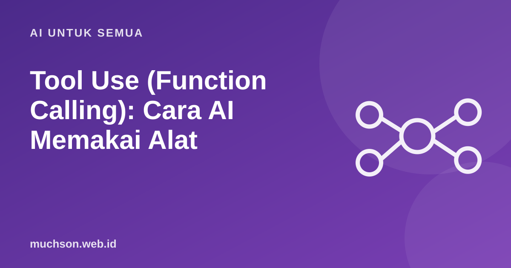

Beranda › Artikel › AI untuk Semua
AI untuk SemuaTool Use (Function Calling): Cara AI Memakai Alat
Model bahasa tidak tahu stok gudang Anda hari ini, tidak bisa membuka database, dan tidak bisa mengirim email. Dengan tool use, model bisa meminta aplikasi Anda menjalankan fungsi tertentu, menerima hasilnya, lalu menyusun jawaban. Inilah dasar dari hampir semua AI agent.

Model tidak menjalankan alat, aplikasi Anda yang menjalankan
Ini poin paling penting. Model hanya meminta: "tolong panggil cek_stok dengan sku FR-01". Kode Anda yang memutuskan dan menjalankan fungsi itu, lalu mengirim hasilnya kembali.
Mendefinisikan alat
Setiap alat punya nama, deskripsi, dan skema input dalam format JSON Schema. Deskripsi yang jelas sangat menentukan kapan model memilih alat itu.
tools = [{
"name": "cek_stok",
"description": "Mengecek stok produk di gudang berdasarkan SKU. "
"Gunakan ketika pengguna menanyakan ketersediaan barang.",
"input_schema": {
"type": "object",
"properties": {
"sku": {"type": "string", "description": "Kode SKU, contoh FR-01"}
},
"required": ["sku"],
},
}]Menjalankan putaran lengkap
pesan = [{"role": "user", "content": "Frame FR-01 masih ada?"}]
respon = client.messages.create(model=MODEL, max_tokens=500, tools=tools, messages=pesan)
while respon.stop_reason == "tool_use":
pesan.append({"role": "assistant", "content": respon.content})
hasil = []
for blok in respon.content:
if blok.type == "tool_use" and blok.name == "cek_stok":
stok = db_cek_stok(blok.input["sku"]) # fungsi Anda sendiri
hasil.append({"type": "tool_result", "tool_use_id": blok.id,
"content": json.dumps({"stok": stok})})
pesan.append({"role": "user", "content": hasil})
respon = client.messages.create(model=MODEL, max_tokens=500, tools=tools, messages=pesan)
print(respon.content[0].text) # "Frame FR-01 masih tersedia 3 unit."Selalu batasi jumlah putaran loop (misalnya maksimal 5-10). Tanpa batas, model yang bingung bisa terus memanggil alat dan menghabiskan biaya.
Contoh alat yang berguna
Prinsip desain alat yang baik
- Sedikit alat yang jelas lebih baik daripada puluhan alat yang mirip.
- Nama dan deskripsi spesifik, termasuk kapan tidak boleh dipakai.
- Validasi semua input dari model, seperti input dari pengguna.
- Hak akses mengikuti pengguna, bukan model: alat hanya bisa melihat data milik pengguna yang sedang login.
- Kembalikan error yang informatif ("SKU tidak ditemukan") agar model bisa memperbaiki langkahnya.
- Bila perlu input yang pasti sesuai skema, beberapa API menyediakan opsi strict pada definisi alat.
Tool use adalah pintu masuk prompt injection: teks berbahaya di dokumen atau email bisa "membujuk" model memanggil alat. Lihat artikel tentang prompt injection.